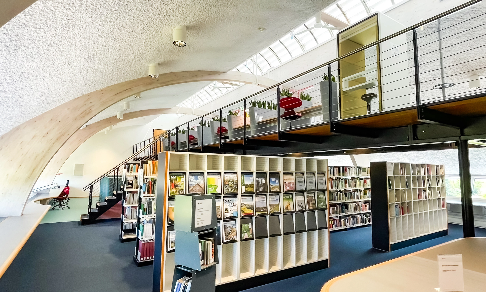
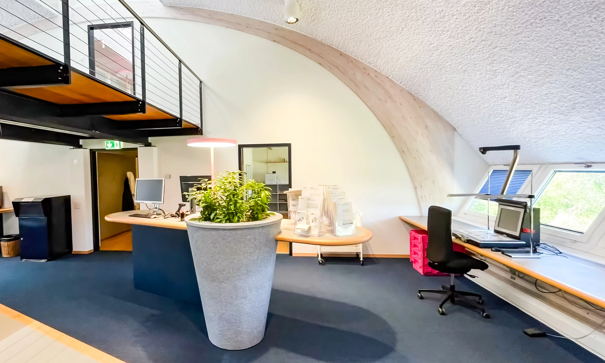

Innenarchitektur
Für die Stadtbibliothek Zürich begleiteten wir die komplette Umgestaltung der öffentlichen Bereiche. Das neue Raumkonzept verbindet eine helle, ruhige Atmosphäre mit funktionalen Arbeitszonen und schafft so einen einladenden Ort für Lernen, Austausch und Veranstaltungen.
Leistungen
Innenarchitektur & Projektleitung
Auftraggeber
Stadtbibliothek Zürich
Fertigstellung
2022
Galerie


Planen Sie eine Innenraumneugestaltung? Wir begleiten Sie von der Vision bis zur Umsetzung.
Kontakt aufnehmen